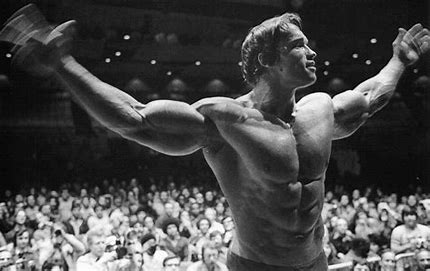

Immersing myself in the worlds of anime, particularly through series like Dragon Ball Z and One Piece, has been a source of inspiration and creativity. These animated sagas, with their complex storytelling and dynamic characters, have greatly influenced my ability to think critically and creatively, while also fueling my passion for rich narrative development and character-driven content.
BodyBuilding
The gym serves as a personal sanctuary where I focus on both physical development and mental well-being. It is a space where I can alleviate stress and maintain balance in my life. My commitment to fitness reflects a holistic approach to health, prioritizing not just strength and endurance but also overall mental and emotional wellness.

Bowling
My involvement in competitive bowling, through participation in a bowlers league, has evolved from a casual pastime into a dedicated pursuit. The sport has honed my skills in precision, strategy, and focus, while also fostering strong camaraderie and teamwork. The joy of continuous improvement and the challenge of achieving a perfect strike drive my passion for this dynamic sport.